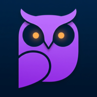

Mussol v{{version}}
How to Play
The goal is to find the analogy. Read the first pair of words and
understand their relationship.
"A is to B..."
Then, select the answer from the four choices that has the most
similar relationship. Some might be weird, this is using AI training
datasets!
- The score is tracked at the top right.
-
Press the icon to restart the
quiz and reset the score.
-
Press the icon to skip a question.
Dataset citation
Title: BERT is to NLP what AlexNet is to CV: Can
Pre-Trained Language Models Identify Analogies?
Authors: Asahi Ushio, Luis Espinosa-Anke, Steven
Schockaert, Jose Camacho-Collados
Publication: Proceedings of the ACL-IJCNLP 2021
Main Conference
Year: 2021